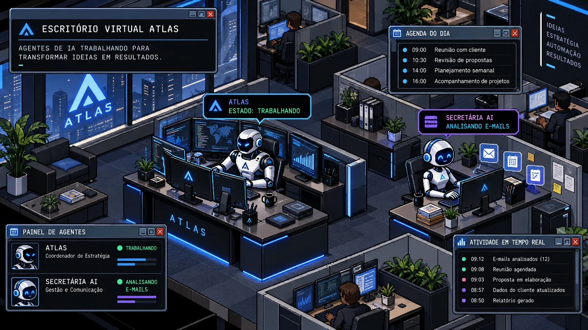

Tarefas pendentes ▥
0Para organizarSEU ESPAÇO INTELIGENTE
Seu dia, sob controle.
Organize seu dia e acompanhe o que realmente importa.
ⓘ
Visualização demonstrativa: todas as tarefas são fictícias e não ficam salvas. Não insira dados pessoais nesta prévia.
Prioridade alta ⚡
0Exigem atençãoConcluídas ✓
0Seu progressoPróximos prazos ◷
0Próximos 7 diasPrioridades
Central de informações
✉ Gmail
Pendente▤ Google Drive
Pendente◉ Memória e IA
PendenteCENTRAL DE AGENTES · VISÃO ISOMÉTRICA 2D
Escritório Virtual.
Envie comandos diretamente aos seus agentes e programe rotinas diárias. A cena é ilustrativa; os registros operacionais vêm do Supabase.
Agentes do escritório02
Comandos registrados00
Rotinas ativas00
ATLAS / EscritórioAcompanhamento operacional

ARTE CONCEITUAL · Somente painéis dinâmicos mostram atividades registradas.
← Deslize para explorar a sala →
Somente comandos e rotinas registrados no Atlas são dados operacionais. O processamento por IA e Gmail/Drive ainda depende de conexão autorizada.
⌘ Dar comando ao escritório
Escolha o agente e diga o que precisa. A ação “Criar tarefa” funciona no banco; pedidos livres ficam aguardando o motor de IA.
◷ Criar tarefa fixa diária
Programe uma tarefa todos os dias. Horário de Brasília (São Paulo). O sistema evita duplicar a mesma tarefa no dia.
Rotinas programadas
Ative, pause ou exclua suas tarefas fixas.
Histórico de comandos
Execução confirmada somente quando registrada no sistema.
Atividade do escritório
◈
Ambiente visual preparadoAtlas e Secretária AI cadastrados na interface. Os serviços dos agentes ainda não foram conectados.
◷
Sem execuções registradasO feed operacional será habilitado quando os agentes registrarem eventos no banco.
AGENTE COORDENADOR
Atlas
Planejamento, organização e distribuição de atividades
Somente demonstração
Integração ainda não iniciada. O Atlas não está executando tarefas autônomas nesta versão. Os registros abaixo não são resultados de IA.
O que o Atlas fará
◈ Organizar suas prioridades pessoais e profissionais
◇ Coordenar solicitações entre os agentes
□ Consolidar entregas e encaminhar decisões
Histórico e aprovações
Nenhuma execução real do coordenador registrada.
Nenhuma aprovação gerada por agente. O módulo de aprovações será integrado após a configuração do motor de execução.
AGENTE ASSISTENTE EXECUTIVA
Secretária AI
E-mails, agenda, compromissos e respostas sugeridas
Somente demonstração
Integração ainda não iniciada. A Secretária AI não lê e-mails nem altera agenda nesta versão. A conexão do Gmail no ChatGPT não autoriza acesso automático por este site.
O que a Secretária AI fará
✉ Identificar mensagens importantes e prazos
◷ Preparar resumos e acompanhar compromissos
✓ Sugerir rascunhos de respostas, sempre com aprovação
Histórico e aprovações
Nenhum e-mail processado por este agente no Atlas.
Rascunhos não disponíveis. Nenhum envio de e-mail ou alteração de agenda pode ser executado nesta versão.
ORGANIZAÇÃO
Minhas tarefas
Filtre por prioridade, área e andamento.
PESQUISA E ACOMPANHAMENTO
Sites monitorados
Defina páginas ou feeds públicos que seus agentes deverão acompanhar.
Acompanhamento inicial: cadastramento e consulta manual de páginas públicas HTTPS. A execução automática em segundo plano ainda depende da ativação do agendador de sites. Não é possível acessar sites que exigem login ou resolver páginas inteiramente em JavaScript nesta etapa.
Adicionar fonte
Fontes cadastradas
Histórico de verificações
Mudanças são detectadas por comparação do texto público. Isso não é uma análise semântica por IA.
COMUNICAÇÃO
Gmail / Google Drive
Acesso somente após autorização Google específica do Atlas.
🔐 Conexão Google — autorização pendente
Seu login no Atlas está funcionando. Para ler Gmail e documentos sem abrir sua senha, criaremos um aplicativo OAuth no Google Cloud. Por segurança, tokens de longa duração deverão ficar somente no servidor.
O Gmail que você conectou ao ChatGPT não é automaticamente compartilhado com o Atlas. Ainda não há leitura de mensagens, envio de e-mails ou conexão ativa ao Drive neste site.
Passo 1. Criar um projeto em Google Cloud, configurar marca e público de teste, registrar seu e-mail como usuário de teste.
Passo 2. Criar credenciais OAuth do tipo Aplicação Web e cadastrar o domínio definitivo do Atlas; habilitar Gmail API e Google Drive API com permissões mínimas de leitura.
Passo 3. Armazenar o Client Secret no servidor, configurar o fluxo OAuth e somente então habilitar o botão “Conectar Google”.
Abrir configuração Google Cloud ↗Rascunhos de e-mail exigirão sua aprovação antes de qualquer envio. Nenhuma alteração em documentos ocorrerá automaticamente.
ARQUIVOS
Documentos
Localize documentos e obtenha sugestões de organização.
Google Drive ainda não conectado
Documentos só serão acessados após você autorizar o site. Nenhum arquivo poderá ser movido ou excluído sem confirmação.
CONHECIMENTO
Memória do Atlas
Preferências e informações sob seu controle.
SISTEMA
Configurações
Informações sobre seu acesso e integrações.
Estado do Atlas
Resumo agendado no ChatGPT: todos os dias, às 08h (Brasília). O agendamento atual do ChatGPT é independente desta aplicação.
Tema: preto e azul. Conta: usuário único. Alterações em documentos e envio de mensagens exigem aprovação.